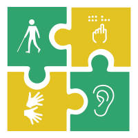

Portal Acessibilidade
O que é a deficiencia visual?
A deficiência visual é determinada pela perda total ou parcial, não podendo ser corrigida por lentes ou tratamentos cirúrgicos. A perda visual pode ser súbita e grave ou ser o resultado de uma deterioração gradual, em que objetos a grande distância se tornam cada vez mais difíceis de ver. Segundo a Organização Mundial da Saúde, há duas divisões para problemas relacionados a visão. Quando há a perda parcial da divisão ou dificuldade ao enxergar objetos de longe, determina-se a subvisão, podendo ser leve, moderada ou grave. Quando há a perda total das habilidades visuais, determina-se cegueira.
Mas o que está relacionado a essas deficiências? Qual a causa delas ocorrerem?
Todas esses graus da deficiência estão relacionadas a anomálias no sistema óptico no corpo humano. As mais comuns são os erros refrativos, muito comum em pessoas que possuem apenas a subvisão e que com tratamento adequado, tais anomalias podem ser corrigidas. Logo abaixo será explicado como funciona cada uma, começando pelas mais leves que são as mais comuns entre as pessoas que possuem deficiência visual.
Ametropia ou erros refrativos
Para que possamos entender como ocorre os erros refrativos, precisamos entender rapidamente como funciona todo nosso sistema óptico. Começando pela luz que provem dos objetos que enxergamos, eles chegam a córnea e ao cristalino do olho que possuem a função de focalizar a luz para a retina, logo após chegar a retina, a mesma envia esse sinal luminoso ao cérebro para ser convertido em impulso nervoso e nos dar a sensação da visão propriamente dita. Diante disso, os erros refrativos são decorrentes da focalização inadequada da luz ao chegar na retina. Existe casos diferentes de ametropia, porem todos causam o mesmo problema. Os tipos de ametropia são: miopia, hipermetropia, presbiopia e astigmatismo.
Miopia
A anomalia da miopia consiste no excesso de tamanho do globo ocular da pessoa que o possui, consequentemente a luz é focada e absorvida antes de chegar a retina, fazendo com que gere imagens distorcidas e a pessoa não consiga enxergar bem de longe. os sintomas da miopia alem de, ter dificuldade de enxergar objetos de longe são: dor de cabeça, forçar as vistas para conseguir enxergar e fadiga ocular.
Hipermetropia
Na hipermetropia, o olho é menor do que o normal. Assim a imagem dos objetos deveria se formar depois da retina. A dificuldade de visão é principalmente para perto, para leitura. Entretanto, quando em grau elevado, a hipermetropia pode ocasionar também diminuição da visão para longe. Em graus pequenos, a hipermetropia pode ser assintomática. Em graus maiores, pode causar cansaço ocular e dor de cabeça, principalmente no fim do dia, após esforço visual prolongado (TV, leitura, computador, etc). Nas crianças, a hipermetropia pode ser causa de estrabismo. Para se obter uma visão nítida, sem esforço, é necessário deslocar o foco de forma a colocá-lo sobre a retina. Consegue-se isso na hipermetropia com o uso de lentes convergentes, de superfície convexa.
Presbiopia
A presbiopia é mais relacionada ao envelhecimento e a idade, pois após os 40 anos de idade, o cristalino, umas das lentes oculares tem sua elasticidade diminuida, prejudicando na mudança da focalização da luz, consequentemente prejudicando a pessoa a enxergar de perto.
Tipos de lentes para correção da presbiopia
Há pelo menos três tipos diferentes de lentes para a correção da presbiopia: Lentes Monofocais: São lentes simples, com foco único, geralmente montadas em armações pequenas e que só devem ser utilizadas na visão de perto, pois desfocam as imagens quando no olhar à distancia. Lentes Bifocais: São facilmente identificadas pela presença de uma divisão entre a parte superior da lente - para visão à distancia, e a parte inferior da lente- para visão de perto. Têm como principal inconveniente a mudança brusca no grau de longe para perto. Lentes Multifocais: Representam a evolução das lentes para correção da presbiopia. Procuram imitar o funcionamento do cristalino, proporcionando focos distintos para distâncias diferentes. Isto se consegue através de um aumento progressivo do grau, de cima para baixo, permitindo ao usuário o seu uso na visão de longe e perto. Externamente não diferem das lentes comuns, ou seja, não apresentam traço divisório.
Astigmatismo
No astigmatismo, a córnea se comporta como se existissem duas lentes na sua superfície. Por não apresentar uma superfície regular, a diferença de curvatura entre eixos perpendiculares dá origem a dois focos distintos, resultando numa visão desfocada. A visão pode estar dificultada para longe e para perto. O astigmatismo pode vir acompanhado de miopia ou hipermetropia.
Cegueira
Catarata
Assim como a prespiopia é um erro refrativo que é desenvolvida com o envelhecimento do ser humano, a catarata por sua vez é uma deficiencia visual que aparece ao envelhecimento, porem a catarata é uma deficiencia no grupo da perda total da visão ou cegueira, diferente da ametropia ou erro refrativo que como citado no inicio é a perda parcial da visão. Como citado acima, o cristalino dos olhos é uma das lentes que focaliza a luz para a retina, por isso é uma lente de suma importancia para que possamos enxergar. Porem, com o envelhecimento, o cristalino começa a se tornar o opaco, com isso ocasiona perda de cores e contrastes na visão da pessoa que possui essa deficiencia.

Porém como lidar com a deficiencia visual?
As diversas formas de lidar com a deficiencia visual, a mais comum é a consulta com um oftamologista para dar um diagnostico acerca da consulta, o uso dos oculos é o mais frequente pois, as lentes do oculos são importantes para a correção dos erros refrativos, ou seja, contribuem para focalizar a luz para a retina. Se tratando cegueira total, quando ocorre da pessoa possuir a catarata, o principal diagnóstico e a cirurgia, pois o uso do óculos não consegue resolver problemas de envelhecimento. A tecnologia tambem contribui muito para lidar com a deficiencia visual e outros tipos deficiencia. Atualmente existe softwares e sistemas operacionais que utilizam modulação de voz para auxiliar pessoas com deficiencia a usar as atuais tecnologias.
DosVox (Gratuito)
O Núcleo de Computação Eletrônica da Universidade Federal do Rio de Janeiro (UFRJ) vem nos últimos anos se dedicando à criação de um sistema de computação destinado a atender aos deficientes visuais. O sistema operacional DOSVOX permite que pessoas cegas utilizem um microcomputador comum (PC) para desempenhar uma série de tarefas, adquirindo assim um nível alto de independência no estudo e no trabalho. O DOSVOX também convive bem com outros programas de acesso para deficientes visuais (como Virtual Vision, Jaws, Window Bridge, Window-Eyes, ampliadores de tela, etc) que porventura estejam instalados na máquina do usuário.
Para mais informações do DosVox, como utilizar, manuais e etc. Entre no site do instituto e vejaclique aqui para fazer o download
MACDAISY
Baseado no padrão internacional Daisy – Digital Accessible Information System -, a ferramenta brasileira traz sintetizador de voz (narração) e instruções de uso em português brasileiro. O software permite converter qualquer texto em formato Daisy e, após a conversão, é possível manusear o texto sonoro de maneira semelhante ao texto escrito. "O Mecdaisy permite que o usuário folheie, consulte o índice, pesquise, faça comentários", enumerou o analista de sistemas da UFRJ, João Sérgio Assis, que participou da equipe de desenvolvimento da ferramenta.
clique aqui para fazer o downloadoutras notícias


© Alunos do Flávio